图 9.1 获取化学能 生物，如图中的田鼠，依靠获取蕴藏在食物化学键中的能量维持各项生命活动。
生命之舟要靠能量推动。所有的生命活动——细菌的游动，猫咪的“喵喵”叫以及你阅读这些文字——都要消耗能量。在这一章中，我们将讨论所有细胞获取有机物的化学能，并将其转移到 ATP 内的过程。对于光合作用的具体讨论（光合作用利用的是光能而非化学能），将放在第 10 章中。我们要先研究化学能向 ATP 的转化，因为所有生物，包括能进行光合作用的以及之食的生物（像图 9.1 中的田鼠），都具有从化学键获取能量的能力。也许有些令你感到意外，但正如你即将看到的，这一过程和光合作用有许多共同之处。
高等植物、藻类和一些细菌，通过光合作用获取太阳能，将辐射能转化为化学能。这些生物，连同其他一些化能合成的生物，通称自养生物 (autotroph) (“自己养活自己”)。其他所有靠自养生物转化的能量为生的生物，称为异养生物 (heterotroph) (“靠别人养活”)。地球上所有物种的至少 95% ——包括所有的动物和真菌，大多数原生生物和细菌——是异养生物。
食物中的化学能在哪里？异养生物怎样获取它来进行各项生命活动（图 9.2）？大多数食物包含各种糖类、蛋白质和脂肪，这些物质都富含高能化学键，比如糖类和脂肪就包含许多碳氢键 (C—H) 和碳氧键 (C—O)。从复杂的有机混合物中获取能量的工作是分步进行的。首先，酶将大分子分解成小分子，这一过程称为消化 (digestion)；然后分别的酶再逐步地降解这些片段，在每步中断获 C—H 键和其他化学键的能量，这一过程称为分解代谢 (catabolism)。
虽然我们从各种食物成分中获得能量，但习惯上首先关注的是糖代谢。我们将分析葡萄糖这一六碳糖逐步分解释放能量的过程，然后再回过头来看蛋白质和脂肪的代谢。
化学键中的能量，可以看作构成共价键的电子所拥有的势能。细胞利用电子做功来获取这种能量，通常是产生能量流通货币 ATP。然后，低能的电子（跟一个质子结合成氢原子）再传递给别的分子。如果是氧气 (O₂) 接受氢原子形成水，这一过程就称为有氧呼吸 (aerobic respiration)；如果是别的无机物分子接受氢原子，这一过程就叫无氧呼吸 (anaerobic respiration)；如果是有些机分子接受氢原子，这一过程就叫发酵 (fermentation)。
从化学本质上讲，细胞氧化分解糖类的反应与壁炉中燃烧木头的过程没有什么显著的不同。两种情况下，反应物都是糖类和氧气，都产生二氧化碳、水和能量：
C₆H₁₂O₆ + 6O₂ → 6CO₂ + 6H₂O + 能量 (热或 ATP)
在细胞内，每摩尔葡萄糖发生这一反应，自由能的变化是 -3012 kJ (-720 kcal) (标准状况，即在室温、一个大气压下，这一数值是 -686 kcal，等于 -2870 kJ)。这一自由能变化，大部分来自葡萄糖分子中 6 个 C—H 键的断裂，负号意味着产物的自由能比反应物小。葡萄糖的有氧呼吸与燃烧放出的能量是相等的，但燃烧时大多数能量以热的形式释放了，这种热在细胞内是不能用来做功的。细胞能够获取葡萄糖等食物分子分解代谢所释放能量的关键，就在于它将一部分能量用来推动 ATP 的产生，从而转化成了一种更实用的形式——一种可以为生命活动提供直接能量的分子。
三磷酸腺苷 (ATP) 是细胞的能量流通货币，它用呼吸作用得到的能量供给细胞中各项需能活动。ATP 为什么能够起到这种作用？第 8 章中曾讲过，ATP 分子是由一个糖分子（核糖）结合一个碱基（腺嘌呤）和三磷酸基团组成。如图 9.3 所示，每一个磷酸基团都带负电荷，同种电荷相互排斥，连接两个磷酸基团的共价键存在张力。这一静电斥力的存在，使磷酸键像翘起的鼠夹子一样储存了能量。当一个磷酸基团传递给另一个有机分子后，放松了 ATP 分子内的斥力，同时使被磷酸化的分子内斥力增加，此分子即利用其中的能量发生一些吸能反应。
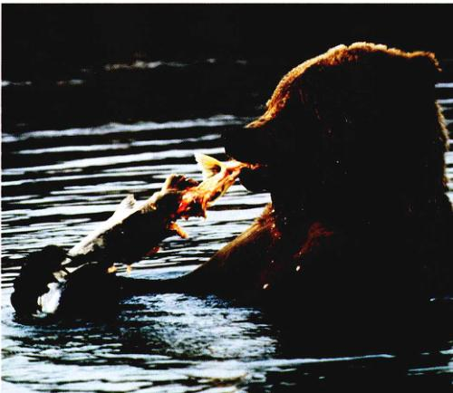图 9.2 以一顿美味的早餐开始每一天 这条鱼包含的糖类、蛋白质和脂肪可供给体细胞的日常生命活动。
图 9.3 ATP 分子的结构 ATP 是由一分子有机碱和一条三磷酸链连在一分子五碳糖的两端组成的。在磷酸链中带有电荷的部分互相靠得很近。同种电荷之间的斥力，使磷酸基团间的化学键储存了相当高的可以转移的能量。
图 9.4 ATP 怎样推动吸能反应 在许多情况下，从 ATP 上脱离的一个磷酸基去激活蛋白质，催化一个吸能反应。
细胞利用 ATP 进行大部分耗能的生命活动，其中最明显的是运动。某些细菌快速地旋转它们长长的尾状鞭毛，依靠水的推力而四处游动，就像轮船靠螺旋浆推进一样。在人的胚胎发育时期，体内的许多细胞通过缓慢的迁移运动到达新的位置。细胞内也存在运动过程，肌肉收缩时肌细胞内的肌纤维会互相拉近，在连接足部和脊柱的狭长神经细胞中，线粒体的运动路程可长达一米，染色体在细胞分裂期内受微管牵拉。所有这些运动过程都需要消耗 ATP。
ATP 的另一大用途是推动吸能反应。细胞的很多合成反应是吸能的，建造分子需要能量，这些反应产物的化学键包含更多的能量，或比反应物有序性提高。这些反应必须有外界提供能量才能进行，ATP 正是供能者。
ATP 怎样推动一个吸能反应？催化吸能反应的酶在表面有两个结合位点，一个结合反应物，另一个结合 ATP。ATP 位点使结合的 ATP 分子水解，释放出大于 30 kJ (7 kcal) 的化学能。这一能量将第二个位点的反应物推上能垒，使吸能反应得以进行。（用类似的原理，你可以跳进游泳池而使浪花溅上天空——虽然重力阻碍，你提供的能量足够用来补偿水克服重力阻力所消耗的能量。）
当 ATP 的解裂推动吸能反应进行时，反应的两个部分（即 ATP 的水解与吸能反应）是协同发生的。一些情况下，二者在同一个酶的表面发生，它们组成一个体系，或者叫“耦联”，好像走路的两条腿；另一些情况下，ATP 的高能磷酸键连接到催化吸能反应的酶上，将其激活（图 9.4）。以这种方法将 ATP 水解能与吸能反应耦联，是细胞利用能量的主要手段之一。
细胞通过两条不同的途径，从有机物的分解代谢制造 ATP 分子：
(1) 底物水平的磷酸化 (substrate-level phosphorylation)：第一条途径称为底物水平的磷酸化（图 9.5），由一个中间体将其带有的磷酸基团直接传递给 ADP 而形成 ATP。在下面将要讲的糖酵解过程中，葡萄糖中的化学键在反应中发生了变换，产生了形成 ATP 所需的能量。
(2) 有氧呼吸：第二条途径称为有氧呼吸，随着电子被获取并沿电子传递链传递，最终由氧气接受，产生了 ATP。真核生物从葡萄糖代谢获得的大多数 ATP 来自这一途径。
对大多数生物来说，这两个过程是联合在一起的。在氧气存在下，细胞经由一系列复杂的酶促反应从葡萄糖获取能量制造 ATP。上述反应可分为 4 个阶段：第一阶段通过糖酵解，由底物水平的磷酸化获取能量，接下来的 3 个阶段，通过氧化糖酵解的终产物进行有氧呼吸。
第一阶段：糖酵解 (glycolysis)。从葡萄糖获取能量的第一步，是一个由 10 步化学反应构成的生化途径，称为糖酵解，它通过底物水平的磷酸化制造 ATP。催化糖酵解各反应的酶位于细胞质基质中，结构上独立于任何膜或细胞器。在反应途径中，开头要消耗 2 个 ATP 分子，然后通过底物水平的磷酸化生成 4 个 ATP。因此，每分解 1 分子葡萄糖，净产生 2 分子的 ATP。除此以外，这一阶段得到 4 个电子和 2 个 NADH。
在有氧呼吸中，NADH 用于生成 ATP。尽管如此，产生的 ATP 总量还是很少的。糖酵解过程结束后，产生的 2 分子丙酮酸仍然包含了原来葡萄糖分子中的大部分能量。
图 9.5 底物水平的磷酸化 某些物质，如磷酸烯醇式丙酮酸 (PEP)，含有一个类似于 ATP 的高能磷酸键。当这一磷酸键在酶作用下转移给 ADP 时，其中的能量也随之转移，ATP 就生成了。
(1) 第二阶段：丙酮酸的氧化。在第二阶段中，糖酵解的终产物丙酮酸，转化为二氧化碳和一种二碳化合物——乙酰辅酶 A (acetyl-CoA)。每转化一分子丙酮酸，就有一分子 NAD⁺ 还原为 NADH。
(2) 第三阶段：Krebs 循环。第三阶段中，乙酰-CoA 进入由九步反应组成的 Krebs 循环，它得名于发现这一循环的英国生物化学家汉斯·克雷布斯 (Hans Krebs)。(Krebs 循环又名柠檬酸循环，源于第一步反应中产生的柠檬酸；有时也叫三羧酸循环，这是因为柠檬酸含有 3 个羧基。) 在 Krebs 循环中，又有两个 ATP 分子由底物水平的磷酸化产生，同时得到的许多电子被用于将 NAD⁺ 还原为 NADH。
(3) 第四阶段：电子传递链。在第四阶段中，NADH 携带的高能电子经过电子传递链，推动了大量 ATP 的合成。
丙酮酸的氧化、Krebs 循环中的反应和电子传递链推动的 ATP 合成，发生于多种类型的细菌中和真核细胞的线粒体内，第 5 章中讲过，线粒体被认为是丛细菌进化而来的。虽然高等植物和藻类可以通过光合作用制造 ATP，它们还是要和动物及不进行光合作用的真核生物一样，通过有氧呼吸合成 ATP。图 9.6 勾勒了有氧呼吸的全貌。
在氧气存在的情况下细胞进行有氧呼吸，用氧接受来自食物分子中的电子。缺乏氧气作为电子受体时，一些生物会采用厌氧呼吸，用无机物分子接受电子。比如，有很多细菌用硫、(亚) 硝酸盐或其他无机化合物代替氧作为电子受体。
(1) 甲烷菌 (methanogens)：第 4 章讲过的原始的古细菌，如嗜热性细菌，都属于进行无氧呼吸的异养型生物。其中一种称为甲烷菌的古细菌，用 CO₂ 作为电子受体，CO₂ 得到由其他生物制造的有机物分子夺取的氢原子后，被还原为 CH₄ (甲烷)。
(2) 硫细菌 (sulfur bacteria)：原始细菌中存在第二类无氧呼吸过程的证据，可以在 27 亿年前的一组岩石中找到。在称为 Woman River 的含铁岩层中，有机物中硫的一种核素 ³²S 的含量，跟 ³⁴S 相比得到了富集。任何已知的地质过程都不能导致这种富集作用，但生物还原硫的作用却可以，而且直至今天，一些原始细菌仍在进行这样的过程。在这一硫酸盐参与的呼吸作用中，细菌将硫酸盐 (SO₄²⁻) 还原为 H₂S 的过程中获取能量，还原剂氢原子来自其他生物制造的有机物。本质上讲，它们与甲烷菌的代谢过程是一样的，只不过以 SO₄²⁻ 而不是 CO₂ 作为氧化剂（电子受体）。
硫酸盐的还原过程营造了富含 H₂S 的环境，为光合作用的最终登场创建了舞台。第 8 章中讲过，光合作用的最初形式是利用光能从 H₂S 得到氢原子。
原始生命的新陈代谢集中在葡萄糖。葡萄糖有很多降解方式，原始生命进化出的降解过程能够释放出足够的能量，以推动在耦联反应中生成 ATP，这一过程称为糖酵解。它发生在细胞质基质中，通过一个 10 个步骤组成的顺序反应，将葡萄糖转化为 2 个含有三碳的丙酮酸分子（图 9.7）。每转化 1 分子葡萄糖，细胞通过底物水平的磷酸化净收获 2 分子 ATP。
糖酵解的前半段过程由 5 步顺序的反应组成，负责将 1 分子葡萄糖转化为 2 分子三碳化合物——3-磷酸甘油醛 (G3P)。这些反应要消耗 ATP，是吸能过程。
步骤 A：糖酵解的准备。由 3 步反应组成，将葡萄糖转化为易于分解为 2 个磷酸化三碳化合物。其中的两步反应需要 ATP 的水解，所以这一步骤中消耗细胞中 2 个 ATP 分子。
步骤 B：分解与重排。在接下来的一步反应中，步骤 A 产生的六碳化合物分解为 2 个三碳化合物。其中之一是 G3P，另一个通过下一步反应也转化为 G3P (图 9.8)。
在糖酵解的后半段过程中，又由 5 步反应将 G3P 进一步转化为丙酮酸。这是一个放能过程，可以产生 ATP。总体来说，酵解由 10 步连续的酶促反应组成，开始先消耗一些 ATP，为的是以后产生更多的 ATP。
步骤 C：氧化。2 个电子和一个质子由 G3P 转移到 NAD⁺，形成 NADH。注意 NAD⁺ 是一个离子，所以新产生的共价键的一对电子都来自 G3P。
步骤 D：ATP 的生成。通过 4 步反应，将 G3P 转化成另一种三碳分子丙酮酸，这一过程产生两分子 ATP (图 9.5)。由于 1 分子葡萄糖裂解为 2 分子 G3P，所以糖酵解总共产生两分子 ATP，以及 2 分子 NADH 和两分子丙酮酸：
4 ATP (步骤 D 中的 2 分子 G3P 各产生 2 个 ATP)
- 2 ATP (步骤 A 的两步反应中消耗的)
------------------------------------------
2 ATP
在细胞内的非标准状况下，每摩尔 ATP 的生成等于从葡萄糖获取 50 kJ (12 kcal) 的能量，而在标准状况下这一数值一般文献上是 7.3 kcal，这意味着酵解的能量收获是 100 kJ/mol (24 kcal/mol)，这笔能量并不太大。每摩尔葡萄糖的化学键蕴含的总能量是 2870 kJ (686 kcal)，所以糖酵解只获取了其中 3.5% 的化学能。
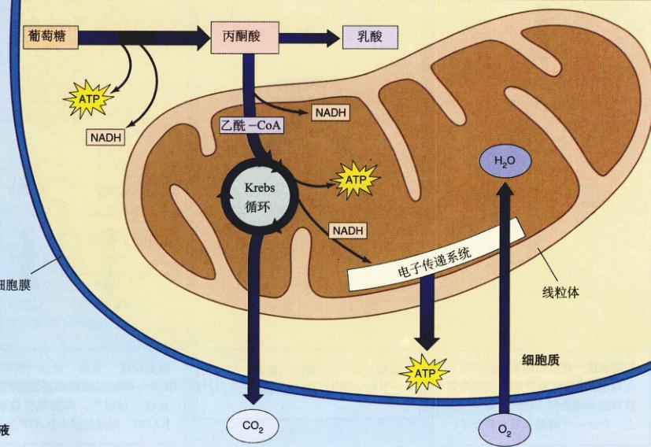图 9.6 有氧呼吸概观 细胞质中的糖酵解，以及线粒体中的氧化、Krebs 循环和电子传递链。
尽管从释放的能量来衡量糖酵解远不是理想方式，但它确实产生了 ATP。在地球生命初期超过 10 亿年的无氧环境中，这一过程一直是异养型生物从有机物制造 ATP 的首要方式。像其他许多生化途径一样，糖酵解据推测也是由后向前进化的，系列反应中后面的反应应当是最古老的。它的后半段过程，即氧化 G3P 产生 ATP 的过程，可能是原始的异养型生物最早用来制造 ATP 的过程。从葡萄糖合成 G3P 的过程是后来才出现的，可能是 G3P 的直接来源耗尽以后。
糖酵解的反应序列被认为是最早进化出的生化过程之一，它无需分子氧的参与，因而易在无氧环境下发生。它所有的反应都在细胞质基质中独立完成，与任何细胞器或膜结构没有联系。所有生物都具备进行糖酵解的能力。然而，现存大多数生物都是通过有氧呼吸过程，从葡萄糖获得更多的能量。
既然获得的能量微不足道，糖酵解过程为什么直到今天还在发生呢？这是因为进化是一个渐进的过程，变化只能是在过去的基础上提高。作为分解代谢来讲，糖酵解满足了进化的一个最基本的条件：即在过去基础上改进。那些不能进行糖酵解的生物很快处于竞争劣势，能发生糖酵解的生物在早期的竞争中生存了下来，以后代谢过程的进一步进化，必须建立在糖酵解的基础上。步获取化学能的出发点。新陈代谢的进化是层进式的，一层新的反应，加在旧的另一层上面，就好像往老房子上连续地刷上一层又一层油漆。几乎所有现存的生物都进行糖酵解，它已成为代谢方式进化历程的记忆。
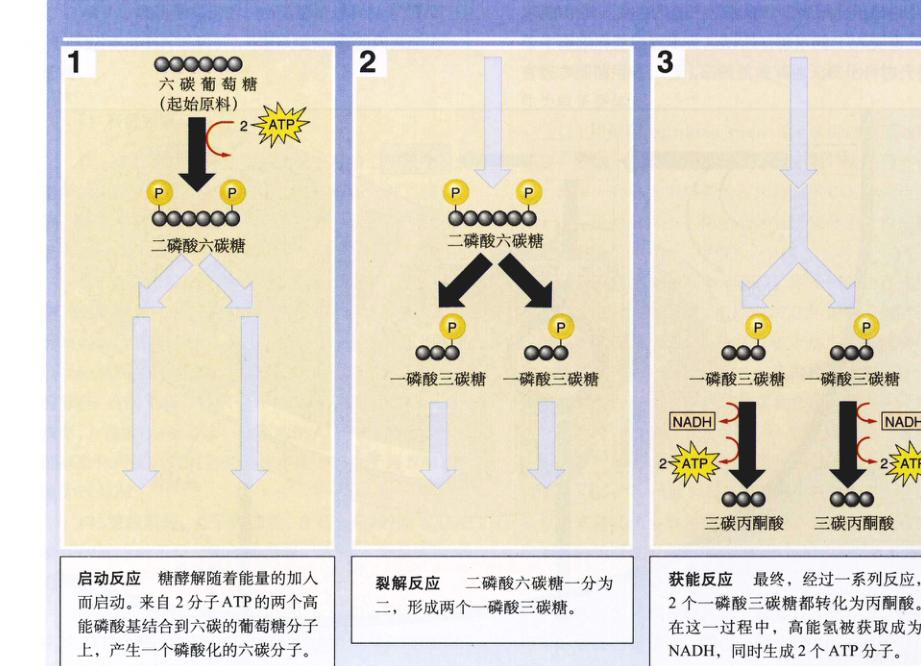图 9.7 糖酵解的机制
1. 启动反应：糖酵解随着能量的加入而启动。来自 2 分子 ATP 的两个高能磷酸基结合到六碳的葡萄糖分子上，产生一个磷酸化的六碳分子。
2. 裂解反应：二磷酸六碳糖一分为二，形成两个一磷酸三碳糖。
3. 获能反应：最终，经过一系列反应，2 个一磷酸三碳糖都转化为丙酮酸。在这一过程中，高能氢被获取成为 NADH，同时生成 2 个 ATP 分子。
图 9.8 糖酵解途径 前 5 步反应将 1 分子葡萄糖转化为 2 分子 3-磷酸甘油醛 (G3P)，后面 5 步反应将 G3P 转化为丙酮酸。
（注：上图详细描述了从葡萄糖到丙酮酸的 10 步化学反应，包括磷酸化、异构化、裂解、氧化脱氢、磷酸转移等过程。）
图 9.9 糖酵解产物丙酮酸的去向 在有氧气存在的情况下，丙酮酸氧化为乙酰-CoA，然后不再进入 Krebs 循环。缺少氧气的情况下，丙酮酸被还原，其电子来源是糖酵解中得到的 NADH。如果丙酮酸直接被还原（如在肌细胞内），产物就是乳酸。如果丙酮酸先脱去一分子 CO₂ 后得到的乙醛被还原（如在酵母菌内），产物就是乙醇。
观察一下糖酵解过程的总反应式：
葡萄糖 + 2ADP + 2Pi + 2 NAD⁺ → 2 丙酮酸 + 2ATP + 2NADH + 2H⁺ + 2H₂O
你就会发现糖酵解带来 3 个变化：①葡萄糖转化为丙酮酸；② 2 分子 ADP 通过底物水平的磷酸化转化为 ATP；③ 2 分子 NAD⁺ 被还原成 NADH。
只要葡萄糖不断从食物分子中产生，细胞就能不停地用上述过程制造出用于生命活动的 ATP 分子。但与此同时，伴随着 NADH 的积累，NAD⁺ 逐渐被消耗。细胞内 NAD⁺ 的含量并不多，为了糖酵解的持续进行，NADH 必须转化为 NAD⁺ 以实现循环利用。来自 G3P 的氢原子，必须最终由 NAD⁺ 以外的其他分子接受。两类分子可以完成这一关键任务（图 9.9）。
(1) 有氧呼吸。氧气是极好的电子受体。通过一系列电子传递，来自 G3P 的氢原子可以传给氧而形成水。这就是有氧条件下，真核细胞中发生的过程。因为空气中氧的含量很高，所以这一过程又叫有氧代谢。
(2) 发酵。当无法获得氧气时，可以用一种有机化合物来代替接受氢原子（图 9.10）。这种发酵作用在大多数生物的代谢中起重要作用，甚至对那些有氧呼吸类型也是如此。
糖酵解产生的丙酮酸究竟发生何种转化，取决于进行上述哪一个过程。在有氧呼吸途径中，丙酮酸开始被氧化为乙酰-CoA，然后进入一系列反应组成的 Krebs 循环继续氧化。相对而言，发酵途径中，丙酮酸全部或部分被还原。我们将先从有氧呼吸开始，然后简要看一下发酵过程。
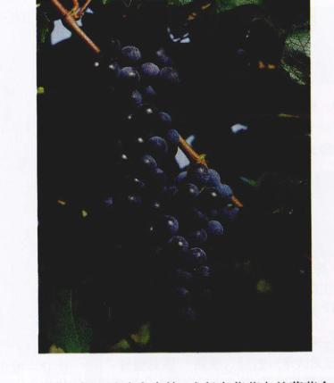图 9.10 酒是怎么酿造出来的 残留在藤蔓上的葡萄会自然发酵，将丙酮酸转化为酒精，它与将葡萄压碎放在桶中发酵酿酒的过程实质上是一样的。这一过程是由酵母菌实现的。当转化产生的酒精浓度逐渐升高到大约 12% 时，酒精的毒性效应会杀死酵母细胞，剩下来的便是酒。
在氧气存在的情况下，起始于糖酵解的葡萄糖氧化，在生成丙酮酸之后，氧化过程将继续进行。对于真核生物，获取丙酮酸的剩余能量是在线粒体内进行的。细胞分两步来取得丙酮酸中蕴藏的可观能量：首先，将丙酮酸氧化为乙酰辅酶 A (acetyl-coenzymeA，简称乙酰-CoA)；然后，由 Krebs 循环进一步氧化乙酰-CoA。
丙酮酸的氧化是由一步“脱羧反应”完成的，它使三碳的丙酮酸分子减少一个碳原子，这一个碳原子变成 CO₂ 离去（图 9.11）。这一反应生成乙酰-CoA 的二碳乙酰基团，同时还产生一对电子及连带的一个质子，它们将 NAD⁺ 还原成 NADH。这一复杂的反应过程，是由线粒体内一种多酶复合体 (multienzyme complex) 催化的，牵涉到三个中间阶段。正如第 8 章提到的，这种复合体的作用是把一系列酶促反应步骤组织起来，这样反应的中间产物就不会扩散散去，也不易发生副反应。在复合体内部，作为其组成结构的多肽将底物从一个酶传递到下一个酶而始终不释放。丙酮酸脱氢酶 (pyruvate dehydrogenase) 系统是由与丙酮酸脱羧有关的很多酶组成的复合体，包含 60 个亚基，是目前所知的最大的酶之一。在反应中，从丙酮酸脱下的羧基与辅助因子辅酶 A (CoA) 结合，形成化合物乙酰-CoA (acetyl-CoA)。
丙酮酸 + NAD⁺ + CoA → acetyl-CoA + NADH + CO₂
这一反应产生 1 分子 NADH，它将在后面用来制造 ATP。然而，乙酰-CoA 的生成（图 9.11）比 NAD⁺ 被还原成 NADH 具有更为重大的意义，这是因为许多代谢过程中都会产生这一中间产物。除了糖代谢的中间产物丙酮酸氧化外，蛋白质、脂肪和其他脂类的分解过程中都有乙酰-CoA 生成。事实上，几乎所有供能分子都包含这一步转化。乙酰-CoA 然后再进入脂胁合成途径或 ATP 合成途径，具体取决于生物体的能量需求。乙酰-CoA 可以说是真核细胞内代谢过程的一个枢纽。
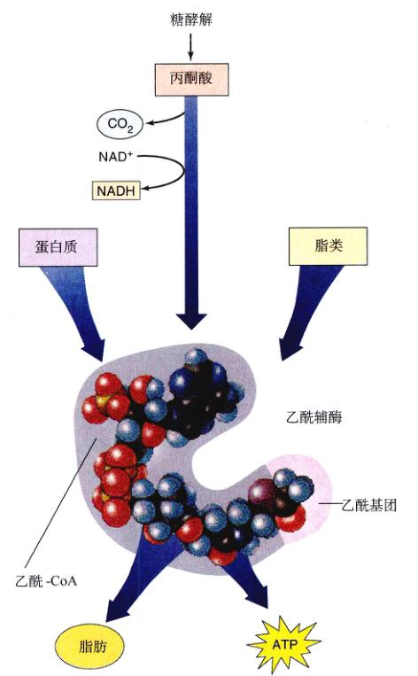图 9.11 丙酮酸的氧化 这一复杂的反应将 NAD⁺ 还原为 NADH，因此是新陈代谢能量的重要来源。它的产物乙酰-CoA 是 Krebs 循环的起始原料，几乎所有的供能分子都先转化为乙酰-CoA，然后再进入脂肪合成途径或产生 ATP 的途径。
尽管细胞以很多条途径形成乙酰-CoA，但其利用乙酰-CoA 的途径却是有限的。主要用于转化为储能物质（比如脂肪酸的合成）或者进入 Krebs 循环，氧化制 ATP。具体选择哪一条途径取决于细胞内的 ATP 含量。当 ATP 含量高时，氧化途径就被抑制了，乙酰-CoA 被用于合成脂肪，这就解释了许多动物（包括人类），摄入食物超过身体需求时会积累脂肪；反之，当 ATP 含量低时，就刺激了氧化途径，乙酰-CoA 进入氧化代谢，产生能量。
在糖酵解将葡萄糖转化为丙酮酸，丙酮酸再被氧化成乙酰-CoA 后，葡萄糖有氧呼吸的第三阶段开始了。在这一阶段中，乙酰-CoA 经过九步系列反应发生氧化，称作 Krebs 循环 (Krebs cycle)。这一系列反应发生在线粒体的基质内。在 Krebs 循环中，乙酰-CoA 含有两个碳的乙酰基团，与一个四碳化合物草酰乙酸结合（图 9.12），产生的六碳化合物经过一系列失去电子的氧化反应，两个碳以 CO₂ 的形式脱去，又恢复为草酰乙酸。再生的草酰乙酸又与另一分子的乙酰-CoA 结合，使这一反应序列循环发生。在每轮循环中，不断有新的乙酰基团来补充失去的两个 CO₂，并不断得到更多的电子来推动制造 ATP。
Krebs 循环的 9 步反应应分为两个步骤：
步骤 A：启动。通过三步反应，生成用于获取能量的六碳化合物。首先是乙酰-CoA 进入循环，然后化学键发生重排。
步骤 B：能量获取。包括六步反应，其中四步通过氧化夺取电子，一步反应直接通过底物水平的磷酸化制造 ATP。
Krebs 循环包含 9 步连续的反应，细胞用以获取高能电子并推动 ATP 的合成（图 9.13）。首先是乙酰-CoA 的一个二碳基团进入循环，然后两个 CO₂ 分子和一些电子在循环中脱去。
(1) 反应 1：聚合。乙酰-CoA 的二碳基团乙酰基与一个四碳化合物草酰乙酸结合，形成六碳化合物柠檬酸。这一聚合反应是不可逆的，以确保乙酰基进入 Krebs 循环。当细胞中 ATP 含量高时，这一反应被抑制；反之则被激活。因此当细胞拥有足够多的 ATP 时，Krebs 循环就被关闭，乙酰-CoA 进入脂肪合成途径。
(2) 反应 2 和 3：异构化。在氧化反应发生之前，柠檬酸中的羟基 (—OH) 必须变换位置。这通过两步来实现：首先，从一个碳原子上脱去一个水分子；接着，水分子加成到另一个碳原子上。结果是一个—H 和一个—OH 改变了位置。这一产物是柠檬酸的一种异构体，称为异柠檬酸。
(3) 反应 4：第一次氧化。这是循环环第一个产生能量的反应，异柠檬酸发生氧化脱羧，首先异柠檬酸被氧化，得到的—对电子用于将 NAD⁺ 还原为 NADH；然后氧化后的中间产物进行脱羧，中心碳原子离去形成 CO₂，产生一种五碳化合物叫做 α-酮戊二酸。
(4) 反应 5：第二次氧化。紧接着，α-酮戊二酸在一种类似丙酮酸脱氢酶的多酶复合物作用下脱羧，放出 CO₂ 后，遗留下来的琥珀酰基也与 -CoA 结合，形成琥珀酰-CoA (succinyl-CoA)。在这一过程中，α-酮戊二酸失去两个电子，又有一分子 NAD⁺ 被还原为 NADH。
(5) 反应 6：底物水平的磷酸化。连接四碳的琥珀酰基与 -CoA 的是一个高能化学键。在一个类似于糖酵解中发生的耦联反应中，这一化学键发生断裂，放出的能量推动了二磷酸鸟苷 (GDP) 的磷酸化，生成三磷酸鸟苷 (GTP)。GTP 易于转化为 ATP，剩下的四碳化合物称作琥珀酸。
(6) 反应 7：第三次氧化。接下来琥珀酸被氧化为延胡索酸。这一反应的自由能变化不足以还原 NAD⁺，而是由黄素腺嘌呤二核苷酸 (FAD) 作为电子受体。与 NAD⁺ 不同，FAD 不能在线粒体内自由扩散，它是线粒体内膜的一部分，它还原后的形态 FADH₂ 向膜内的电子传递链提供电子。
(7) 反应 8 和 9：草酰乙酸的再生。在这一循环的最后两步反应中，水分子与延胡索酸加成，生成苹果酸。苹果酸再被氧化，得到的是四碳化合物草酰乙酸和两个自由电子。电子用于将 NAD⁺ 还原为 NADH。草酰乙酸，这一引发 Krebs 循环的物质，又可以与另一个来自乙酰-CoA 的乙酰基团结合，开始新一轮的循环。
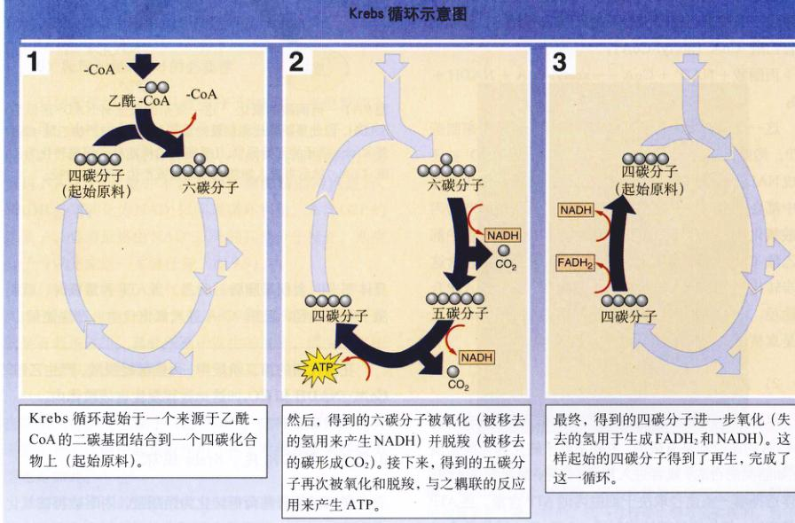图 9.12 Krebs 循环的过程
1. Krebs 循环起始于一个来源于乙酰-CoA 的二碳基团结合到一个四碳化合物上（起始原料）。
2. 然后，得到的六碳分子被氧化（被移去的氢用来产生 NADH）并脱羧（被移去的碳形成 CO₂）。接下来，得到的五碳分子再次被氧化和脱羧，与辅酶的反应用来产生 ATP。
3. 最终，得到的四碳分子进一步氧化（失去的氢用于生成 FADH₂ 和 NADH）。这样起始的四碳分子得到了再生，完成了这一循环。
图 9.13 Krebs 循环 这一系列反应发生在线粒体的基质内。糖酵解和丙酮酸氧化产生的两分子乙酰-CoA 通过 Krebs 循环，使葡萄糖分子彻底分解。注意观察循环中的每一步反应，尤其是分子骨架的变化。
（注：上图展示了从乙酰-CoA与草酰乙酸缩合成柠檬酸，经异柠檬酸、α-酮戊二酸、琥珀酰-CoA、琥珀酸、延胡索酸、苹果酸，最终回到草酰乙酸的详细过程，标示了 NADH, FADH₂, ATP/GTP, CO₂ 的生成位置。）
在有氧呼吸过程中，葡萄糖彻底被消耗。六碳的葡萄糖分子，首先在糖酵解中分解成两个三碳的丙酮酸分子；每一分子丙酮酸在转化为乙酰-CoA 的过程中，以放出 CO₂ 的方式失去一个碳原子；其他两个碳原子在 Krebs 循环中也以 CO₂ 的形式失去。现在剩下来的工作就是看一看以上过程的能量计量：一部分能量储存在 4 个 ATP 分子中，还有一部分包含在 12 个电子载体中，其中 10 个是 NADH 分子，2 个是 FADH₂ 分子。
为了理解细胞是怎样利用葡萄糖代谢中的部分能量进行 ATP 合成的，我们需要深入了解葡萄糖分子中 C—H 键中的电子。我们在第 8 章中陈述过，当电子从一个原子转移到另一个原子时，其势能也一并发生转移。在这一过程中，得到电子的原子被还原。如果电子在原子之间发生完全的转移，我们就说还原是“全或无”式的，这在实际中经常出现的情况。然而，有时候还原只是提供共价键中电子对的偏向，即共用程度 (degree of sharing) 发生了变化。让我们再次讨论这个话题，考虑电子转移不完全时会发生什么情况。
葡萄糖的分解代谢是一个氧化还原反应。因为葡萄糖中碳原子核与氢原子核对价电子的吸引力几乎相等，即它们具有相似的电负性 (electronegativity)，所以 C—H 键中的共用电子几乎不偏向于其中任何一方。然而，当葡萄糖中的碳原子与氧气反应结合成 CO₂，新共价键中电子的位置发生了改变。电子不再平等地共享，葡萄糖分子中与碳原子靠近的电子，在 CO₂ 中则明显向氧原子一边。这样电子实际上从碳原子一边被拉远了，葡萄糖中的碳原子被氧化（失去电子），氧原子被还原（得到电子）。与之类似，当葡萄糖中的氢原子与氧结合成水时，氧原子把共用电子拉得离它们更近，氧气被还原而葡萄糖被氧化。在这一反应中，氧是氧化剂（吸电子），它氧化了葡萄糖中的原子。
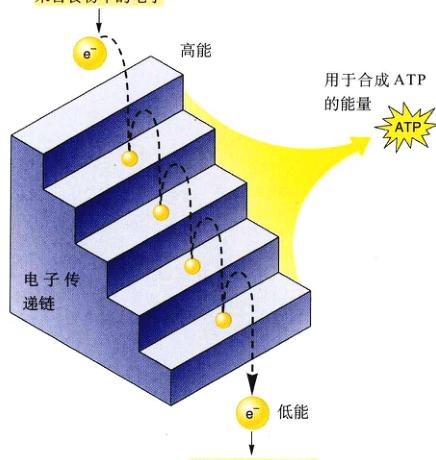图 9.14 电子传递链的工作机制 上图显示了当电子从一个能级跃迁到下一个能级时，ATP 是怎样合成的。与爆发性地一次放出能量不同，电子是一步步“降落”到更低的能级上。在每次“降落”中，它们结合到能量更低（电负性更强）的电子受体上，从而放出储存的能量。
图 9.15 NAD⁺ 和 NADH 这个二核苷酸在细胞呼吸中充当电子“梭”的角色。NAD⁺ 从大分子的降解中得到电子，被还原为 NADH。
理解葡萄糖氧化的关键，集中在共用电子的能量上。在一个共价键中，必须提供能量才能使一个电子脱离原子，就像将大石块滚上山坡必须提供能量一样。原子的电负性越强，这能量势垒就越高。然而，当电子从负性弱的原子移近电负性强的原子时，就会放出能量，就像让大石块自由地从山上滚下来。在葡萄糖氧化代谢中，电子有向氧原子更靠近的“下坡”趋势，因而会放出能量（图 9.14）。
葡萄糖由于有大量 C—H 键而富含能量。用氧化-还原的观点来理解，葡萄糖拥有许多距离所属原子核较远的电子，它们都具有更加靠近原子核的潜力。在氧化呼吸过程中，能量被释放，原因之一是 C—H 键中的氢原子从葡萄糖转移给了氧，原因之二是价电子位置的变化，这种变化释放的能量可用于合成 ATP。
通常单的一步反应释放的能量越多，其中转化为热（分子无规则运动）的部分就越多，相应的转化成其他有用形式的能量就越少。对于汽油的燃烧，在油箱中一次性爆炸与在气缸中一次次地引燃放出的是一样的，但后者获能效率更高，有更多的能量用于推动活塞使汽车前进。
同样的原理可以应用到葡萄糖在细胞内的氧化。如果只通过一步爆发性的反应，就让所有的氢原子与氧结合，从而一下子释放出所有的自由能，细胞能从中获取的有用能量会很少。细胞实际采用的方式类似于汽车的汽油燃烧，是分步实现的，每次用一点。葡萄糖中 C—H 键的 6 个碳原子，通过一系列的酶促反应逐步脱去，这些反应分别称作糖酵解和 Krebs 循环，这章的前面对此已详述。其中氢原子是通过结合 NAD⁺ 而离去的（图 9.15）。第 8 章讨论过，NAD⁺ 是一种用处很多的电子受体，在整个细胞内携带者高能电子做穿梭运动，在获取葡萄糖能量的过程中，它作为初级电子受体。
当你观察这些反应的时候，尽量不要纠缠于物质所带电荷的变化，而要始终注意其中电子的流向。酶从葡萄糖每夺取 2 个氢原子——也就是两个电子和 2 个质子，就把 2 个电子和一个质子传递给 NAD⁺，将另一个质子释放到周围溶液，形成氢离子 H⁺。这一转移把 NAD⁺ 转化为 NADH，也就是说两个带负电的电子和一个带正电的质子，结合到带一个正电荷的 NAD⁺ 上，形成电中性的 NADH。
NADH 中的能量并没有被一次性获取。在氧气存在的情况下，NADH 携带的两个电子并不是直接传递给 O₂，而是要经过电子传递链。这条电子传递链包含了一系列分子（主要是蛋白质），它们嵌在线粒体的内膜中。NADH 作为链的起始电子供体，O₂ 是最后的受体，它与氢离子最终结合为水。每一步传递都使电子与电负性更强一些的受体结合，电子与原子核的距离也随之不断发生微小幅移动。于是，电子沿着能级下降。整个过程在标准状况下共释放的能量约 222 kJ/mol (53 kcal/mol)。电子在这条链上的传递使能量逐步被获取。在下一节中，我们将介绍这些能量是怎样做功，并推动 ATP 合成的。
在有氧呼吸前三个阶段中，NAD⁺ 和 FAD 被还原时各得到一对电子，形成 NADH 和 FADH₂。NADH 将电子带到线粒体的内膜上，并将电子传递给一系列膜蛋白，这些膜蛋白总起来称为电子传递链。
首先接受电子的是一种叫做 NADH 脱氢酶 (NADH dehydrogenase) 的膜蛋白复合体，而后由泛醌 (也称辅酶 Q) 传递给一种蛋白质——细胞色素 bc1 复合体 (bc1 complex)，这些传递链中的复合体同时作为质子泵，将质子泵到膜外。细胞色素是一类包含为了血红素的呼吸蛋白，血红素由双键交错排列的碳环及中心的铁原子构成。
然后电子又经由另一个载体细胞色素 c (cytochrome c) 运载到细胞色素氧化酶复合体，复合体利用得到的 4 个电子还原分子氧，每个氧原子与两个电子和两个氢离子结合成水：
O₂ + 4H⁺ + 4e⁻ → 2H₂O
这一系列与膜结合在一起的电子载体统称电子传递链（图 9.16）。
NADH 将其电子传递给电子传递链中的第一个蛋白质——NADH 脱氢酶。而与线粒体内膜连在一起的 FADH₂ 则较后向电子传递链输出电子，它将电子传给泛醌。
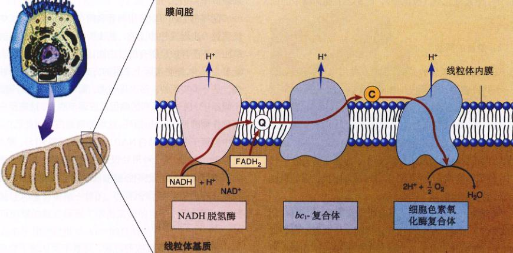图 9.16 电子传递链 从被降解的分子中获得的高能电子，由可移动的电子载体（Q 代表泛醌，C 代表细胞色素 c）携带，沿着膜蛋白组成的电子传递链进行传递（红箭头）。其中的 3 种蛋白利用电子的部分能量，将质子从基质泵入膜间腔（蓝箭头）。电子最终传给氧从而形成水。
正是有了充足的电子受体（通常是氧气），才使得有氧呼吸变为可能。正如第 10 章要看到的，有氧呼吸中的电子传递链与好氧光合作用非常相似，而且极有可能就是从它进化而来。
在真核生物中，有氧呼吸的过程发生在所有细胞的线粒体内部。线粒体内部的基质（基质中）含有进行 Krebs 循环的酶。有氧呼吸获得的电子，在电子传递链上传递过程中，释放的能量将质子从基质泵入内膜外叫做膜间间隙的部分。完成这一任务的是内膜上的 3 种跨膜蛋白（图 9.16）。受激发的电子流，引起这 3 种作为泵的蛋白质构象变化，使它们能进行跨膜运输。NADH 贡献的电子激活了所有这 3 种质子泵，而 FADH₂ 则只激活了其中两种。
随着膜间腔内质子浓度的升高，线粒体基质开始略带负电荷，这一内部的负电性吸引带正电的质子重新进入基质。外部质子浓度越高，扩散回基质的趋势就越强。由于膜对质子具有相当程度的不透性，大多数质子是利用线粒体内膜上的质子通道进入基质，当质子流经时，质子通道就由基质内的 ADP 和 Pi 合成 ATP，ATP 再通过易化扩散进入细胞质基质中。由于推动 ATP 化学合成的是扩散的力，与渗透作用类似，所以这一过程被称为化学渗透 (chemiosmosis)（图 9.17）。
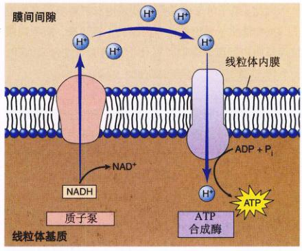图 9.17 化学渗透 NADH 将大分子降解得到的高能电子传递给“质子泵”，后者利用这一能量将质子泵到线粒体基质外。结果是膜间间隙中的质子浓度提高，导致质子回流。它们中的大部分经过特殊的质子通道回流，这些通道将质子的流入和 ATP 的合成反应相耦联，完成了 ATP 的合成。
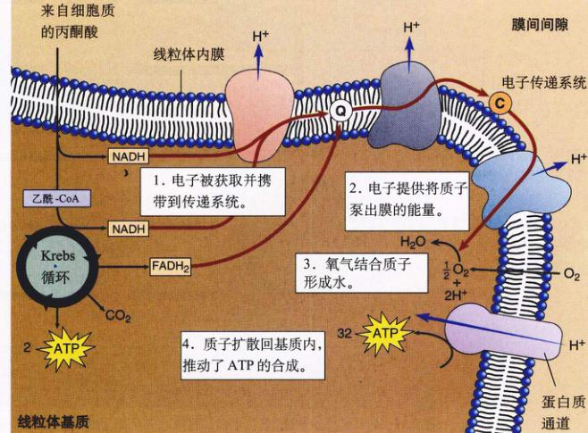图 9.18 Krebs 循环和电子传递链中的 ATP 合成 这一过程开始于糖酵解的产物——丙酮酸，结束于 ATP 的合成。
1. 电子被获取并携带到传递系统。
2. 电子提供质子泵出膜的能量。
3. 氧气结合质子形成水。
4. 质子扩散回基质内，推动了 ATP 的合成。
因此，电子传递链的作用就是用有氧呼吸得到的电子，将大量质子泵出线粒体内膜外。接下来，质子向线粒体基质内回流，驱动了以化学渗透的方式合成 ATP。图 9.18 总结了以上全部过程。
从一分子葡萄糖获得电子中，如果通过电子传递链和化学渗透来制造 ATP，细胞能够获得多少代谢能量？
化学渗透模型中，电子传递链上每一个激活的质子泵都可以产生一分子 ATP。来自 NADH 的电子可以激活 3 个质子泵，而 FADH₂ 提供的电子只能激活 2 个。这样二者分别产生 3 个和 2 个 ATP 分子。然而，真核细胞的糖酵解过程和 Krebs 循环分别在细胞质基质和线粒体中进行，这样就必须把糖酵解中产生的 2 个 NADH 膜运送到线粒体内。每运送 1 分子 NADH 要消耗一个 ATP，这样 ATP 的净产量就减少了 2 个。综上所述，有氧呼吸中 ATP 的理论产量应该是 4（糖酵解中底物水平的磷酸化）- 2（进入线粒体消耗）+ 4（Krebs 循环中底物水平的磷酸化）+ 30（来自自 10 个 NADH 分子）+ 4（来自 2 个 FADH₂ 分子）- 2（用于糖酵解产生的 NADH 的穿膜运输）= 36 分子 ATP（图 9.19）。
真核细胞从 1 分子葡萄糖的有氧呼吸中实际能得到的 ATP 分子数要稍小于 36，这有两个原因：①线粒体的内膜对质子有少许通透性，这就使部分质子不经过能产生 ATP 的质子通道而重新进入线粒体基质；②线粒体膜内外的质子浓度梯度还可以有除制造 ATP 外别的用途（如将丙酮酸运输到线粒体基质）。结果是 NADH 和 FADH₂ 产生的 ATP 的个数分别接近 2.5 和 1.5。经过这一修正，真核细胞实际从 1 分子葡萄糖有氧呼吸中得到的 ATP 分子总数接近于 4（底物水平的磷酸化）+ 25（来自 10 个 NADH 分子）+ 3（来自 2 个 FADH₂ 分子）- 2（糖酵解产生的 NADH 的穿膜运输）= 30 分子 ATP。
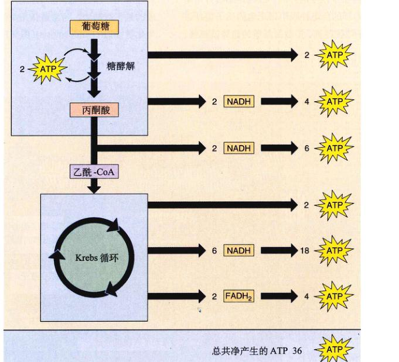图 9.19 ATP 的理论产量 理论上通过有氧呼吸从葡萄糖获取的 ATP 分子数是 36。
与糖酵解相比，以有氧呼吸的方式分解葡萄糖的效率相当高。真核细胞的有氧呼吸可以从葡萄糖可供利用的能量中获得约 7.3 × 30 ÷ 686 = 32% 的能量。（一辆小汽车一般可以将汽油中 25% 的能量转化为有用功。）呼吸作用获取能量的效率很高自然地限制了食物链的长度。
有氧呼吸效率的提高是异养型生物发生进化的关键因素。有了这种产生 ATP 的机制，不进行光合作用的生物完全依靠氧化降解其他有机体，来获得生命活动需要的能量才变得可行。也就是说，只要一些生物通过光合作用来获取能量，其他生物便可以仅仅依靠食用它们来生存。
当细胞有了足够量的 ATP 后，糖酵解、Krebs 循环和脂肪酸分解中的关键反应都被抑制，从而减缓了 ATP 的产生。这一由 ATP 水平决定的调节生化反应的机制，是反馈抑制的一个实例。反之，当 ATP 含量降到一定程度，ADP 浓度上升时，ADP 就激活控制糖分解代谢的某些酶，刺激了更多 ATP 的合成。
葡萄糖分解代谢有两个重要的控制点（图 9.20）：
① 糖酵解中的控制点是磷酸果糖激酶，它催化第三步反应，将单磷酸果糖转化为二磷酸果糖，这是底物进入糖酵解的第一步反应，具有相当程度的不可逆性。较高浓度的 ADP（说明有必要把过多的 ADP 转化为 ATP）激活了磷酸果糖激酶，使更多的糖进入分解途径。磷酸果糖激酶还会受到低浓度的柠檬酸的激活（说明 Krebs 循环过程还需要原料）。
② 丙酮酸氧化的主要控制点，位于进入 Krebs 循环的这一步，受调控的酶是丙酮酸脱氢酶，高浓度的 NADH（表示不再需要更多了），会抑制丙酮酸脱氢酶发挥作用。
Krebs 循环中还有一个控制点，那就是柠檬酸合成酶，它催化循环的第一步反应，即草酰乙酸和乙酰-CoA 到柠檬酸的转化，高浓度的 ATP 抑制柠檬酸合成酶（同酵母中抑制丙酮酸脱氢酶和 Krebs 循环中的另外两种酶），切断了糖代谢途径。
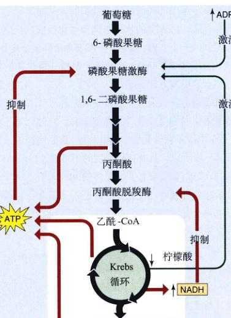图 9.20 葡萄糖分解代谢的控制 ATP 和 ADP 的相对水平，在两个关键入口来控制糖分解代谢的途径：进入糖酵解的反应和进入 Krebs 循环的反应。
到现象为止，我们讨论了葡萄糖的有氧呼吸，葡萄糖来自摄入的多糖或者光合作用。葡萄糖以外的有机物，尤其是蛋白质和脂肪，也是重要的能量来源（图 9.21）。
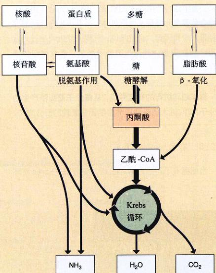图 9.21 细胞怎样获取化学能 所有真核生物和许多原核生物通过氧化有机物获取能量。这一过程的第一阶段，是把大分子分解为较小的分子，只产生很少的能量。第二阶段，即有氧呼吸阶段，主要以夺取高能电子的方式获得能量，产生水和二氧化碳。
蛋白质首先分解为单个的氨基酸，接着，分子中的含氮基团（氨基）通过脱氨基作用 (deamination) 而移去，然后，再经过一系列反应将脱氨后的剩余碳链转化为与糖酵解或 Krebs 循环的分子。举例来说，丙氨酸转化为丙酮酸，谷氨酸转化为 α-酮戊二酸（图 9.22），天冬氨酸转化为草酰乙酸。经过糖酵解或 Krebs 循环各步反应，这些分子中的高能电子被生物获取，用于推动 ATP 合成。
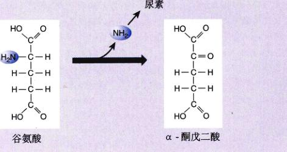图 9.22 脱氨基作用 在蛋白质被分解成构成它们的氨基酸后，氨基被脱去，其产物可以进入糖酵解或者 Krebs 循环。图中的谷氨酸脱去氨基后，转变为三羧酸循环中的一种化合物分子——α-酮戊二酸。
脂肪首先分解成脂肪酸和甘油。脂肪酸的尾巴常含有 16 个或更多的 —CH₂ 基团，长尾巴上如此多氢原子可以提供一大笔能量。脂肪酸在线粒体基质中发生氧化，酶从脂肪酸带有羧基的一端不断地移走乙酰基团，直到整个脂肪酸链都变成乙酰基团（图 9.23），解离下来的乙酰基团与 -CoA 结合成乙酰-CoA，这一过程就是所说的 β-氧化 (β-oxidation)。
降解脂肪酸可以产生多少 ATP？让我们比较一个六碳的脂肪酸分子和同样含有 6 个碳原子的葡萄糖分子，后者在真核细胞内约产生 30 分子 ATP，两轮 β-氧化可以把这一脂肪酸分子拆成 3 分子乙酰-CoA。每轮氧化的开头会消耗一分子 ATP 引起始反应，但每轮会产生一分子的 NADH 和 FADH₂，它们共可以产生 4 分子 ATP（假定 NADH 产生 2.5 个，FADH₂ 1.5 个），每分子的乙酰-CoA 在 Krebs 循环中氧化，又可以产生 10 个 ATP，总计这个六碳的脂肪酸分子产生的 ATP 数目大约是 8（两轮 β-氧化）- 2（引发氧化需要的）+ 30（来自 3 个乙酰-CoA 的氧化）= 36。因此，6 个碳原子的脂肪酸氧化产生的 ATP 分子数比葡萄糖多约 20%，而且六碳脂肪酸的分子量比葡萄糖的三分之二还要小，这样相同质量的脂肪酸包含的能量是葡萄糖的两倍以上。这就是为什么许多种类的动物，都选取脂肪作为体内多余能量的储存方式。如果像植物一样用糖类储存能量，动物体形会臃肿得多。
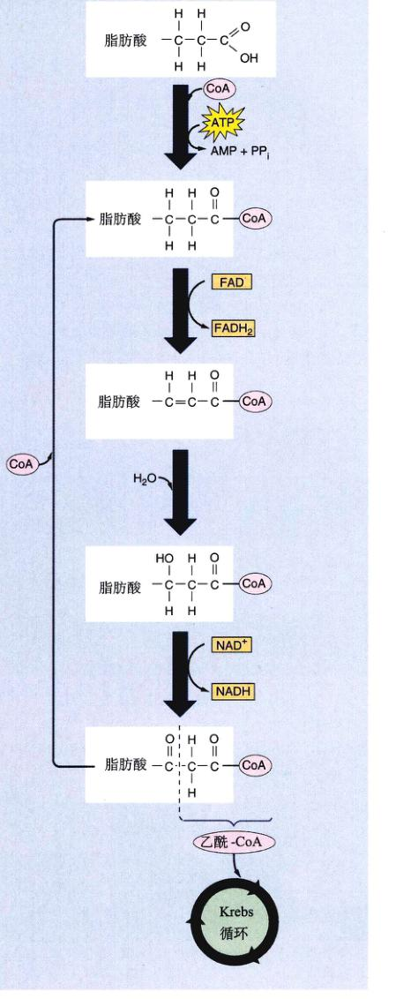图 9.23 β-氧化 通过一系列称为 β-氧化的反应，脂肪酸末端的两个碳原子与 -CoA 结合成乙酰-CoA，然后进入 Krebs 循环。少了两上碳的脂肪酸，再次经过这一途径，直到它的所有碳原子都转移到乙酰-CoA 中。每轮 β-氧化，消耗一分子 ATP 并分别产生一分子的 NADH 和 FADH₂（不包括 Krebs 循环所产生的）。
据估计，仅能进行糖酵解的异养型生物，只获取了它所消耗食物中 3.5% 的能量。如果这样的初级消费者体内保存了 3.5% 的能量，以为食的次级消费者通过糖酵解，再获取 3.5% 的能量，也就是从生产者那里获取了其能量的 0.12%。这样，供养一小群异养型生物就需要大批的生产者。
当生物可以利用有氧呼吸获取能量后，这一压力得到了大大缓解，因为有氧呼吸获取能量的效率估计在 52% 到 63% 之间，使得下一个营养级可以转移给上一个营养级的能量较之糖酵解大为增加（每个营养级代表能量在生态系统中的一步流动）。有氧代谢效率的提高，使食物链的进化成为可能。在食物链中，生产者为初级消费者所食，初级消费者又为次级消费者所食，如此继续下去。你会第 28 章中了解更多关于食物链的内容。
即使存在有氧代谢，还是有接近三分之二的有用能量在营养级间的能量流动中散失，这大大限制了食物链的长度。大多数食物链，像图 9.A 那样，只包括 3 个，极少情况下有 4 个营养级。每次能量转移中都损失大量能量，使得食物链不会比这个更长。举个例子来说，想让大量人口靠从非洲 Serengeti 平原捕获的狮子为食显然是不可能的，因为那里可提供的牧草数量，不足以供养足够多的斑马和其他草食动物，不足以供养所需的大量狮子提供食物。有氧呼吸的获能效率，从根本上决定了生态系统的复杂程度。
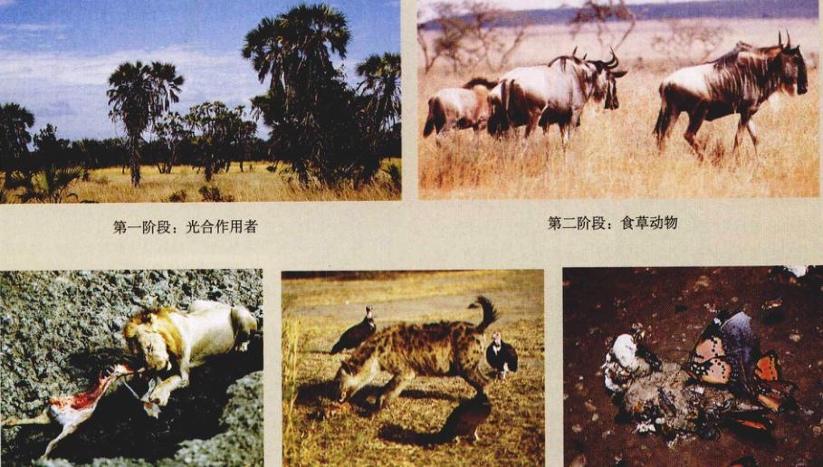图 9.A 东非热带稀树草原上的食物链 第一阶段：光合作用者。这些棕榈树下的野草在炎热的雨季飞快地生长，获取光能并将其储存在葡萄糖分子中，再转化为淀粉储存起来。第二阶段：食草动物。这些称为角马 (wildebeest) 的大型羚羊，食用草类并将其中部分能量转移到自身体内。第三阶段：食肉动物。这只狮子以角马和其他动物为食，把获取的部分能量储存在自身体内。第四阶段：食腐动物。这只鬣狗和两只秃鹰在食物链中跟狮子占据了相同的营养级，它们以死去的、为狮子所遗弃的角马的尸体为食。第五阶段：分解者。蝴蝶，Precis octavia 正在吞食鬣狗吃进消化后的排泄物。在后 4 个阶段中的每一个，仅有约三分之一或更少的能量被利用了。
在缺乏氧气的环境中，有氧呼吸无法进行，细胞必须完全依赖于糖酵解来产生 ATP。从糖酵解获得的氢原子被传递给一些有机物，这一过程称为发酵 (fermentation)。
细菌中进行发酵作用的类型有 10 多种，它们都利用某个有机物分子从 NADH 接受氢原子，使 NAD⁺ 得到再循环；
有机分子 + NADH → 还原的分子 + NAD⁺
还原形态的有机化合物常是一种有机酸，如乙酸、丁酸、丙酸或者乙醇。
真核生物只能进行很限的几种发酵作用，其中之一发生在酵母菌这种单细胞真菌中，从 NADH 接受电子的是糖酵解终产物本身——丙酮酸。酵母的酶通过脱羧反应，从丙酮酸上脱去末端的 CO₂ 基团，得到二碳化合物乙醛，放出的 CO₂ 可以使面包膨胀而松软，而没有经过发酵的面包就不会有这一情况。乙醛从 NADH 接受氢原子，产生 NAD⁺ 和乙醇（图 9.24）。这一类型的发酵作用是各种酒类中乙醇的来源，因此对人类有很大的益处。乙醇其实是发酵过程的副产品，对酵母菌是有毒的。当溶液中乙醇的浓度接近 12% 时，便开始毒杀酵母菌，这就解释了为什么自然情况下的发酵得到的酒浓度不会超过 12%。
大多数动物并不通过脱羧反应再生 NAD⁺。例如，肌细胞利用乳酸脱氢酶，将 NADH 的氢原子返还给糖酵解的产物丙酮酸。这一反应将丙酮酸转化为乳酸，同时 NAD⁺ 得到再生，这样就形成了代谢循环。只要葡萄糖存在，糖酵解就可以持续进行下去。血液循环从肌细胞运走积累的乳酸（它的负离子形式），但如果这一运输速度赶不上乳酸的产生速度，积累的乳酸就会影响到细胞功能，引起肌肉疲劳。
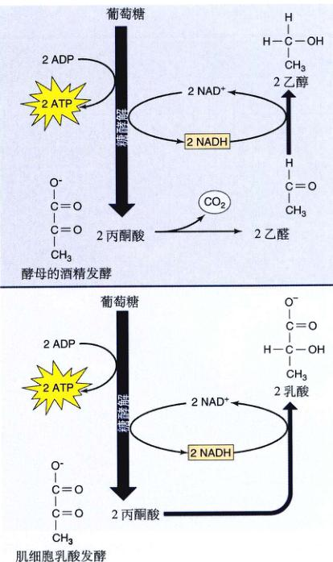图 9.24 发酵 酵母菌进行从丙酮酸到酒精的转化 (见图 9.10)。肌细胞将丙酮酸转化为乳酸，它的毒性比酒精要低。然而，在剧烈运动中，当肌细胞的氧气耗尽后，积累的乳酸还是会引起肌肉的酸痛。